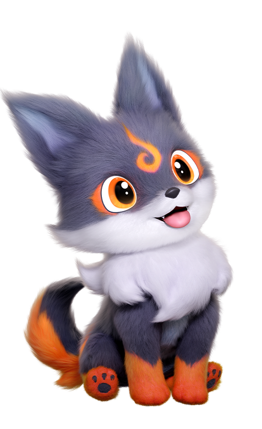
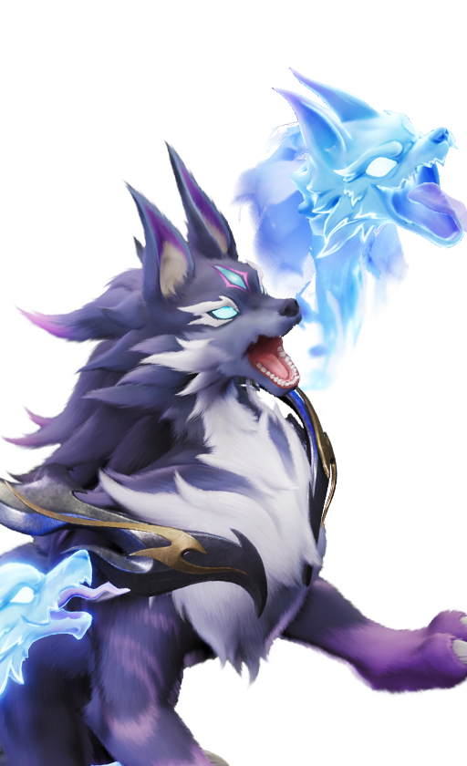

애니모 공명 단계 육성, 만상의 결정 몇 개 있어야 다음 단계 가나
위키 도감을 보다가 공명 조건이 궁금해서 찾아봤는데, 55레벨을 채우면 만상의 결정 1개가 필요하다고 적혀 있더라고요. 처음엔 이게 뭔가 싶어서 공지까지 더 뒤져봤는데, 어디에도 이 재료를 한눈에 정리해주는 글이 없길래 제가 직접 애니모 공식 위키 도감 페이지를 하나하나 열어서 확인해봤어요. 오늘은 그렇게 뒤진 결과로 공명 단계마다 만상의 결정이 몇 개 있어야 다음 칸으로 넘어가는지, 그리고 아직 확인이 안 된 부분까지 정직하게 정리해볼게요.
공명이 뭔지부터 정리하고 갈게요
공명은 잠재력이나 진화랑은 완전히 다른, 별개의 육성 축이에요. 잠재력이 발현·상한·열매 계승 쪽이고 진화가 재료를 모아 다음 형태로 바꾸는 거라면, 공명은 애니모 레벨을 채워서 공명 단계를 하나씩 올리고 그때마다 '만상의 결정'이라는 재료를 소모하는 시스템이거든요. 그래서 이 글은 공명 단계 자체의 레벨 조건이랑 소모 재료만 다룰게요 — 잠재력을 어떻게 물려줄지, 진화를 어느 순서로 할지는 완전히 다른 주제라 여기서는 따로 다루지 않아요.
만상의 결정, 공명 LV6·LV7에 몇 개 필요한가요?
공명 LV6은 55레벨을 채우면 만상의 결정 1개, LV7은 65레벨을 채우면 2개가 필요해서 두 단계를 합치면 총 3개를 챙겨야 해요. 이건 애니모 공식 위키 도감에 올라온 개체별 페이지를 전수로 확인해본 값인데, 86종 전부 완전히 똑같은 숫자라 어떤 애니모를 키우든 이 공식 하나만 기억해두면 돼요.
| 공명 단계 | 달성 조건 | 필요 재료 |
|---|---|---|
| LV 6 | 55레벨 달성 | 만상의 결정 x1 |
| LV 7 | 65레벨 달성 | 만상의 결정 x2 |

위키 도감에 실린 탄멍멍(NO.001) 기본형 일러스트예요 — 공명 LV6·LV7 표는 같은 페이지 안에 따로 정리돼 있어요.

원소·포지션이 완전히 다른 헬울프(NO.004) 기본형 일러스트인데, 이 페이지의 공명 표도 탄멍멍이랑 똑같았어요.
여기서 헷갈리시면 안 되는 게, 만상의 결정은 진화에 쓰는 재료랑 완전히 다른 물건이에요. 헬울프 진화에 쓰는 '늑대의 영혼'이나 '어둠석' 같은 재료는 진화 전용이고, 만상의 결정은 지금까지 확인된 바로는 공명 LV6·LV7을 올릴 때만 쓰는 육성 전용 재화라서 서로 안 섞여요. 그리고 만약 애니모 여러 마리를 동시에 공명 LV7까지 키울 계획이시라면, 지금 확인된 LV6·LV7 두 단계만 놓고 봐도 마리당 만상의 결정 3개는 기본으로 필요하다는 뜻이니(LV1~5 몫은 아직 확인 전이라 여기 포함 안 됐어요) 처음부터 넉넉하게 모아두시는 게 나중에 덜 급해요.
그럼 공명 LV1~5는 어떤 조건인가요?
솔직히 말씀드리면 공명 LV1부터 LV5까지 조건은 아직 확인이 안 됐어요. 위키 도감 페이지를 열어보면 딱 LV6·LV7 두 줄만 표에 떠 있고, 그 아래 단계는 어느 개체 페이지를 봐도 아예 안 나오더라고요. 탄멍멍·헬울프 말고 다른 종 몇 개를 더 열어봐도 똑같은 구조라, 이건 특정 개체만 빠진 게 아니라 위키 자체의 구조적인 한계로 보여요. 이번에 확인한 시점도 밝혀두면, 처음 86종을 쭉 훑은 게 9월 20일이었고 탄멍멍·헬울프 페이지는 9월 26일에 한 번 더 열어서 값이 그대로인지 재확인까지 했어요. 그래서 LV1~5는 인게임 공명 화면을 직접 열어서 확인해야 정확할 것 같고, 확인되는 대로 이 글에 이어서 채워둘게요.
만상의 결정은 어디서 구하나요?
이것도 정직하게 말씀드리면, 공식 위키·확률 안내 페이지·공식 공지 어디에도 만상의 결정을 어떻게 얻는지 설명이 없어요. 확률 안내 페이지에는 포획 공식이랑 지맥 정수 육성, 엘리트 드랍 확률까지는 나오는데 이 재료 얘기는 한 줄도 없더라고요.🔍 공식 미기재 생각해보면 만상의 결정은 포획·드랍률표 계열이 아니라 별도 성장 재화라, 그 페이지에 없는 게 오히려 자연스러운 것 같기도 해요.
다만 커뮤니티에서는 전투훈련부 멘토 '리타'와의 대결에서 얻었다는 보고가 하나 올라와 있어요(DC인사이드 애니모 갤러리 게시글 기준, 공식 미확인). 게임 안에 '리타'라는 전투훈련부 멘토 NPC가 실제로 있다는 것까지는 확인했는데, 이 방법이 유일한 획득 경로인지, 정확히 어떤 레벨 조건이 붙는지는 아직 재현되거나 검증된 얘기가 아니라서 그대로 믿고 달려가시기보다는 참고 정도로만 봐주셨으면 해요. 같은 곳에 '만상의 결정 얻는 방법?'이라고 되물은 다른 글도 있었는데, 거기엔 아직 답이 달려있지 않아서 이것도 확실히 밝혀진 이야기는 아니라는 것만 다시 짚어드릴게요.
| 구분 | 지금까지 확인된 상태 |
|---|---|
| 공명 LV6·LV7 조건·재료 | 확인됨 — 86종 전수 동일 |
| 공명 LV1~5 조건 | 확인 안 됨(위키 미노출) |
| 만상의 결정 획득처 | 공식 미확인, 커뮤니티 보고만 있음 |
그래서 공명 단계, 어떻게 준비하면 좋을까요
지금까지 확인된 것만 놓고 보면, 애니모를 55레벨까지 키우면서 만상의 결정 1개를 준비하고, 65레벨까지 더 키우면서 2개를 추가로 모으면 된다는 게 핵심이에요. 다만 애니모는 정식 출시(9월 16일)한 지 이제 열흘 남짓이라, 공명 관련 수치나 획득처가 패치로 조정될 여지는 열어두시는 게 좋아요.
애니모 공명 단계 자주 묻는 질문
Q. 공명이랑 잠재력·진화 우선순위는 같은 이야기인가요?
아니에요. 공명은 레벨을 채워서 단계를 올리는 시스템이고, 잠재력 계승이나 진화 우선순위는 별개의 다른 주제라 이 글에서는 다루지 않았어요.
Q. 위키에 있는 86종을 전부 다 열어보고 확인한 건가요?
네, 9월 20일에 86종 전부를 하나하나 열어서 만든 자료가 있어요. 오늘(9월 26일)은 그중 탄멍멍·헬울프 2종만 다시 열어서 값이 그대로인지 한 번 더 확인했고, 나머지 84종은 9월 20일에 만든 자료 그대로예요.
Q. '공명 성급'이라는 표현도 봤는데 이거랑 같은 건가요?
정본 명칭표에 '공명 성급'이라는 말이 따로 등재돼 있긴 한데, 이게 이번에 다룬 '공명 LV6·LV7 단계'랑 같은 시스템의 다른 이름인지 별개 하위 시스템인지는 아직 대조가 안 됐어요. 그래서 이 글에서는 위키 도감 표기 그대로 '공명 단계'라는 말만 썼어요.
Q. 만상의 결정을 진화 재료로도 쓸 수 있나요?
아니요. 만상의 결정은 공명 전용 재료라 진화에는 쓰이지 않아요. 헬울프 진화에 쓰는 늑대의 영혼·어둠석처럼, 진화는 진화대로 따로 재료가 있어요.
애니모 공명 단계 정리
정리하면 공명 LV6·LV7 조건은 위 표 그대로고, 다른 애니모를 키울 때도 똑같이 적용돼요. 다만 LV1~5 조건이랑 재료 획득처는 아직 다 밝혀지지 않은 부분이 있으니, 확인되는 대로 이 글을 계속 업데이트해둘게요.
✔ 애니모 같이 보기 좋은 내용
· 애니모 스탯 보는 법, 브레이크·리젠 뜻과 포지션(역할군) 5종 정리
· 애니모 드림쵸 얻는 법, 도감 결번 030번 정체부터 엘리트 트레이닝 조건까지
· 애니모 탐사 스킬 19종 총정리, 가속·이륙·은신 뭐가 있나
참고한 곳
· 애니모 공식 위키 · 탄멍멍 도감 페이지
· 애니모 공식 위키 · 헬울프 도감 페이지